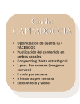
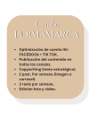

Comunicar, para mi, significa atraer, seducir, involucrar, tentar.
Creo íntegramente estrategias de contenido, rodajes de vídeo y fotográficos y me ocupo de la idea de producción y post producción de vídeos digitales que pueden ser utilizados en diferentes soportes.
Desde videos más tradicionales hasta aquellos que buscan un efecto viral, para encuadrar mejor los objetivos dentro de una estrategia de vídeo marketing.
Copy writing innovador, editing impactante.
-Análisis de los perfiles
-Análisis de objetivos, mercado y competencia.
-Creación de estrategias
-Creación del calendario mensual de contenido
-Informe del avance
-Monitoreo de campañas y KPI
Pide tu consulta gratis!
Pide tu consulta gratis!
Pide tu consulta gratis!
w
Un cafecito para empezar la jornada laboral

Las Redes Sociales son una parte integral de la estrategia de marketing de una empresa, que también es sinónimo de nuevas oportunidades de negocio.
Desde un punto de vista comercial, una Red Social es ante todo un conjunto de usuarios, capaz de proporcionarnos información sobre la forma en que el público ve y percibe la marca. Es fundamental que las empresas se pongan en contacto con estas personas, porque cada usuario es un cliente potencial.

Lamentablemente, está claro que muchas empresas carecen de visión estratégica en el uso de las redes sociales.
Enfoques como: "Mientras tanto abriré una página y luego veremos" o "Todos están en las redes sociales" no sólo no dan ningún resultado, sino que también corren el riesgo de tener efectos negativos importantes en la empresa.
La estrategia debe ser la base del proceso y el hilo conductor que une todas las acciones realizadas, para no cometer errores triviales y simples. Escuchar y analizar a la competencia y al mercado son los mejores métodos para decidir de antemano los próximos pasos para destacar y hacer única la marca.
Las Redes Sociales son una parte integral de la estrategia de marketing de una empresa, que también es sinónimo de nuevas oportunidades de negocio.
Desde un punto de vista comercial, una Red Social es ante todo un conjunto de usuarios, capaz de proporcionarnos información sobre la forma en que el público ve y percibe la marca. Es fundamental que las empresas se pongan en contacto con estas personas, porque cada usuario es un cliente potencial.
Lamentablemente, está claro que muchas empresas carecen de visión estratégica en el uso de las redes sociales.
Enfoques como: "Mientras tanto abriré una página y luego veremos" o "Todos están en las redes sociales" no sólo no dan ningún resultado, sino que también corren el riesgo de tener efectos negativos importantes en la empresa.
La estrategia debe ser la base del proceso y el hilo conductor que une todas las acciones realizadas, para no cometer errores triviales y simples. Escuchar y analizar a la competencia y al mercado son los mejores métodos para decidir de antemano los próximos pasos para destacar y hacer única la marca.